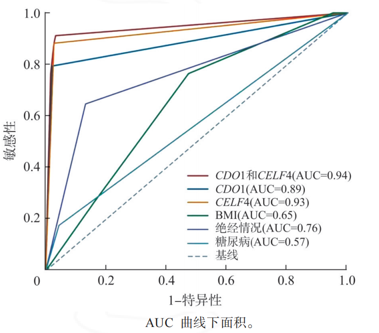

1Background & Objective
- Problem: AUB common but EC rare; ultrasound & CA125 cannot confirm EC; invasive hysteroscopy over-used.
- Objective: value of CISENDO (CDO1/CELF4) dual-gene methylation for EC screening in AUB.
2Study Design & Cohort
216
AUB hysteroscopy
2021.7–22.6
enrollment
histology
gold standard
- Setting: Gansu MCH hysteroscopy clinic; cervical cells → CDO1/CELF4 methylation.
- Comparators: ultrasound (ET) & serum CA125.
- Univariate: age (P=0.001) · BMI (P=0.002) · diabetes (P=0.012) · menopause (P<0.001) · methylation (P<0.001).
- Multivariate: BMI OR 3.970 · menopause OR 18.702 · CDO1m OR 22.351 · CELF4m OR 60.995.
91.2%
Se (76.3–98.1)
96.7%
Sp (93.0–98.8)
60.995
CELF4m OR
91.2%
Se · CISENDO
55.9%
Se · US
32.4%
Se · CA125
- Inclusion: AUB women at Gansu MCH hysteroscopy clinic; complete data.
- Exclusion: prior treatment · other malignancy · invalid samples.
- Statistics: univariate + binary logistic (OR) · Se/Sp/PPV/NPV/AUC.
- Focus: postmenopausal women — highest screening value.
60.995
CELF4m OR
22.351
CDO1m OR
18.702
menopause OR
- Missed-diagnosis risk: many AUB women avoid hysteroscopy — delay EC diagnosis.
- Invasive risks: perforation · adhesion · infection — avoided by methylation triage.
Funded: Lanzhou Sci-Tech Bureau 2022-5-92 · Gansu NSF 23JRRA1380; CISENDO outperforms US & CA125 across Se/Sp.
3Risk Factors — OR Comparison
- Methylation leads: CELF4m OR 60.995 (5.99–620.92) — dominant EC risk signal.
4ROC & Head-to-Head

Fig. ROC — CISENDO dual-gene vs ultrasound & CA125.
91.2%
Se · CISENDO
96.7%
Sp · CISENDO
55.9%
Se · US
32.4%
Se · CA125
- Clear superiority: methylation ≫ ultrasound & CA125 for EC screening.
- Postmenopausal: highest value — flags high-risk women.
5Three-Method Performance
- Non-invasive screening: dual-gene methylation best balances Se & Sp.
- Reduces invasive burden: fewer unnecessary hysteroscopies/biopsies.